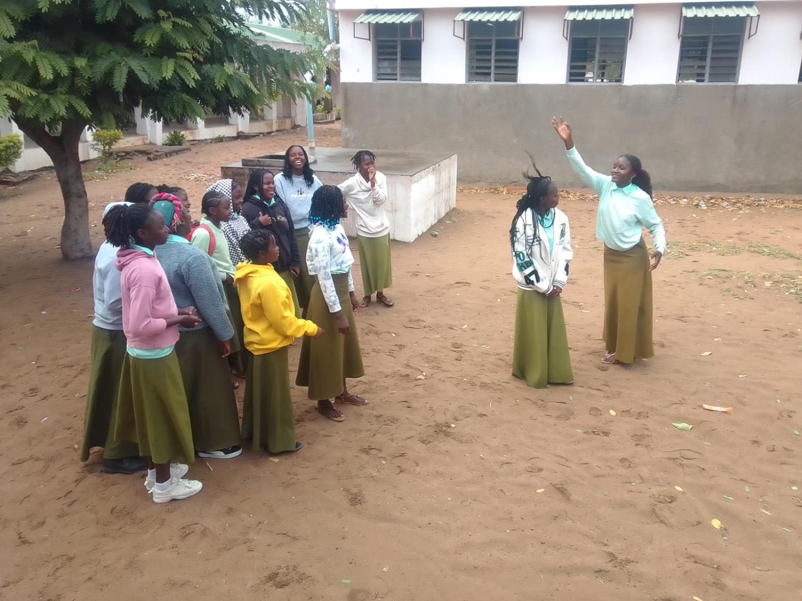

Contextualização do tema e a sua importância no ambiente escolar
O bullying é um fenómeno social presente em muitas escolas, caracterizado por comportamentos agressivos, intencionais e repetidos, que ocorrem numa relação de desequilíbrio de poder entre o agressor e a vítima.
No ambiente escolar, o bullying manifesta-se de diversas formas: verbal (insultos, humilhações), físico (agressões), psicológico (exclusão, intimidação) e, cada vez mais, através do cyberbullying (redes sociais, mensagens e partilha de conteúdos ofensivos).

Momentos de interacção positiva e apoio entre colegas – base para a prevenção do bullying
A importância de falar sobre o bullying é fundamental, pois este problema afecta gravemente a saúde mental, o desempenho académico e o desenvolvimento social dos alunos. Escolas que não enfrentam este fenómeno tornam-se espaços de medo e insegurança, prejudicando o processo de ensino e aprendizagem.
Este website pretende contribuir para a sensibilização da comunidade escolar, fornecendo informação clara, análise das causas e consequências, e propostas concretas de prevenção e intervenção.